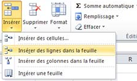
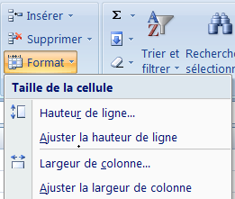

III) Gestion des lignes et des colonnes
1. Insérer une ligne entière ou une colonne entière
Insérer une ligne entière :
✔ Sélectionnez une cellule à l’endroit où la ligne entière doit être insérée.
✔ Dans le groupe «Cellules» de l’onglet «Accuil», cliquez sur «Insérer» puis cliquez sur l’option « Insérer des lignes dans la feuille » .

Remarque :
de la même manière vous pouvez insérer une colonne entière
2. Modifier la hauteur des lignes et la largeur des colonnes
Modifier la hauteur des lignes :
✔ Sélectionnez la (ou des) ligne(s) à modifier
✔ Dans le groupe «Cellules» de l’onglet «Accuil», cliquez sur «Format»
✔ cliquez sur «Hauteur de ligne» puis tapez la valeur souhaitée et cliquez sur OK

Remarque :
de la même manière vous pouvez modifier la largeur des colonnes
3. Supprimer des lignes et des colonnes
Supprimer des lignes
✔ Sélectionnez la (ou des) ligne(s) à supprimer
✔ Dans le groupe «Cellules» de l’onglet «Accuil», cliquez sur «Supprimer»
✔ cliquez sur «Supprimer des lignes dans la feuille»
Remarque :
de la même manière vous pouvez supprimer des colonnes